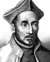

Sakat bir İspanyol askeri olan İgnatius Loyola (1491-1556), 1534 yılında daha ziyade Cizvitler olarak bilinen İsa Topluluğu’nu kurdu. Bir süre sonra organizasyonu yaygın bir dini akım ve Avrupa çapında örgütlü bir güç haline gelecekti. Onun liderliği altındaki Cizvitler karşı-reform döneminde Katolikliğin canlanmasında önemli rol oynadılar. Loyola aynı zamanda misyoner faaliyetleri ve Papa’ya olan fanatik bağlılığı ile tanınmaktadır.

Loyola, İspanya’nın kuzeyindeki bir kalede doğdu. Müreffeh ve iyi bağlantıları olan bir ailenin on üç çocuğundan en küçüğüydü. 1517 yılında, Fransa ile olan savaş sırasında orduya katıldı. 1521 yılında ağır bir biçimde yaralandı. Bir Fransız topu, bacaklarının arasından geçti. Bir bacağı kırılırken diğeri de sakat kaldı.
Loyola uzun ve acılı tedavi sürecini dua ederek, dini kitaplar okuyarak geçirdi. Daha sonra çeşitli kutsal yerleri ziyaret ederek İspanya’yı dolaştı. Bir mağarada dua ederek birkaç ay geçirdi. Kudüs’e giderek hacı oldu. Bir ara intihar etmeyi düşünse de sonunda yolculuğu Fransa’da son buldu. 1528 yılında Paris Üniversitesi teoloji bölümüne girdi.
Loyola, Fransa’ya vardığında Protestanlık Kuzey Avrupa’da hızla yayılıyordu. Martin Luther (1483-1546) ünlü 95 Tez’ini Almanya’daki bir katedralin kapısına çoktan asmıştı (1517). Paris’te bir teolog olan John Calvin (1509-1564) ise 1536 yılında kendi Protestan reformunu başlatmak üzereydi.
Loyola, Vatikan’a sadık kaldı. Altı arkadaşı ile birlikte 1534 yılında Cizvitler grubunu kurdu. Temel amaçları Papa’ya hizmet etmekti. Papa 3. Paul (1468-1549) 1540 yılında tarikatı resmen tanıdı. Loyola, grubun ilk lideri olarak kabul edildi. Hızla kalabalıklaştılar. Loyola, kiliseyi canlandırmak ve Reform’u tersine çevirmek için Katolikler’i etrafında topluyordu. Fransa, Almanya, Polonya ve diğer Avrupa ülkelerinde dağılmış bir biçimde bulunan Katolikler ile kilisenin arasında yeniden bir bağ kurmak istiyordu. Protestanlığın yayılmasını engelleme konusunda büyük ölçüde başarılı oldu.
Roma’da öldüğü sırada Loyola’nın taraftarları düzinelerce kolej kurmuşlar; Asya, Avrupa ve Güney Amerika’ya misyonerler yollamışlardı.1609 yılında kutsandı ve 1622 yılında aziz ilan edildi.
Ek Bilgiler
1- Loyola’nın en gözü kara takipçilerinden Francis Xavier (1506-1552), 1541 yılında misyonerlik faaliyetleri için Hindistan’daki Goa’ya gönderildi. Daha sonraları gelmiş geçmiş en başarılı misyoner olarak aziz ilan edilecekti. Misyonerlik faaliyetleri için Mozambik, Endonezya, Japonya ve Çin’de dolaşmıştı.
2- Loyola’nın kitabı Spiritual Exercises (Ruhsal Egzersizler) savaş sonrasında yaşadığı iyileşme döneminde yazılmıştır. Kitapta anlatılanlar, pek çok Katolik tarafından imanlarını güçlendirmek için otuz günlük bir program şeklinde uygulanır.
3- Cizvitler, pek çok Protestan ülkede Papa’nın şahsi casusluk örgütü olarak kabul edildi. Onlardan çok korkuluyordu. İngiltere’de 1605 yılındaki Barut Komplosu’nun ardından pek çok Cizvit, parlamentonun bombalanması olayına karıştıkları şüphesiyle idam edildi.